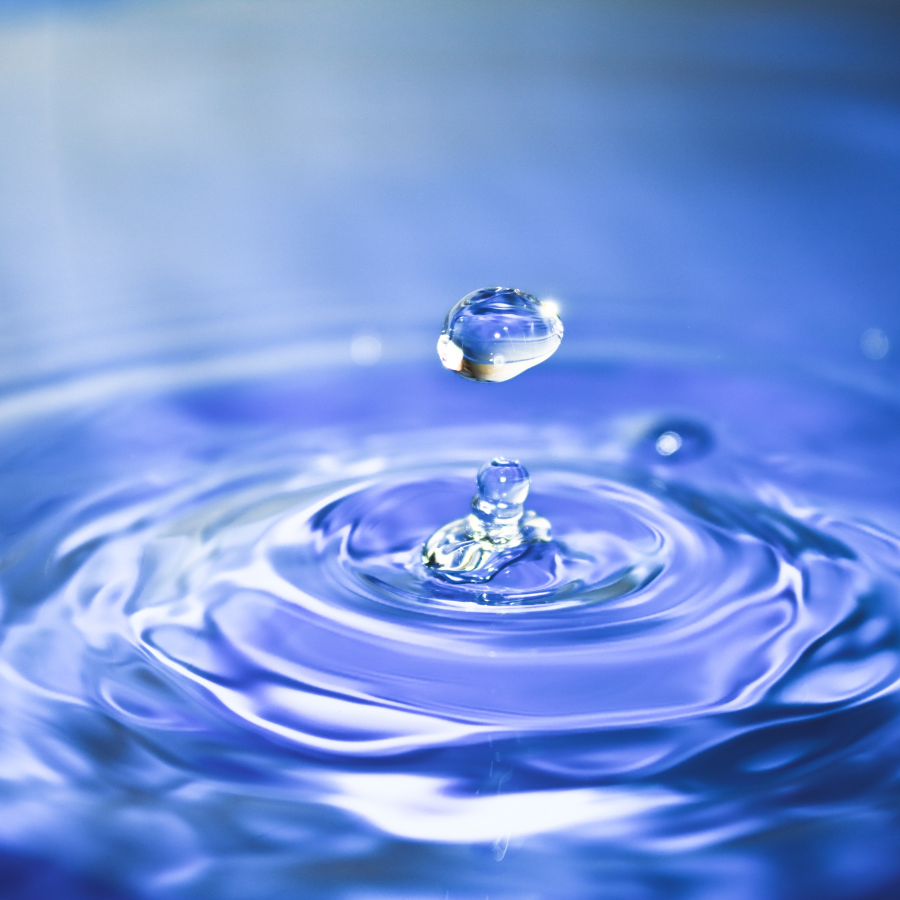

Wody naturalne źródlane
Są to wody czerpane z płytszych warstw podziemnych. Woda źródlana to woda raczej nisko mineralizowana choć czasem można spotkać wodę źródlana o średnim stopniu zmineralizowania. Takie wody mają mniej niż 1000 mg składników mineralnych w litrze. Ich skład chemiczny może czasem ulegać zmianie ze względu na uwarunkowania geologiczne.

Wody naturalne mineralne
Są to wody pozyskiwane dzięki głębinowym odwiertom. Wody mineralne mają raczej stały niezmienny skład chemiczny. Takie wody jak sama nazwa wskazuje są wysoko lub średnio zmineralizowane. Zawierają co najmniej 1000 mg składników mineralnych w litrze.
Wody stołowe
Są to wody które otrzymuje się w wyniku zmieszania naturalnej wody źródlanej lub wody wodociągowej z różnymi składnikami mineralnymi lub z wodą mineralną. W przypadku wód stołowych nie mamy już do czynienia z przedrostkiem „naturalna” a to dlatego, że w toku produkcji jej skład chemiczny może ulegać zmianie. Taka woda stołowa idealni gasi pragnienie. Zalecana jest osobom pracującym fizycznie, sportowcom. Wyczerpanie fizyczne powoduje większe zapotrzebowanie na ilości określonych składników mineralnych.
Wody naturalne lecznicze
Wody te pochodzą ze źródeł leczniczych. Zawierają nie mniej niż 1000 mg składników mineralnych w jednym litrze oraz co najmniej jeden składnik leczniczy. Stężenie tego składnika musi być odpowiednie tak, aby znacząco wpływał na organizm człowieka. Wody naturalne są pozyskiwane z głębokich warstw ziemi dlatego są bardzo nisko zanieczyszczone. Przez lata wypłukiwały cenne minerały korzystne dla zdrowia. Zawartość minerałów w jednym litrze wody naturalnej to od 500mg do 1500 mg. Najczęściej są to: magnez, wapń, sód, siarczany, chlorki i węglany.
Woda morska, woda słona
Woda występująca w morzach i oceanach. W wodzie tej są rozpuszczone tysiące związków chemicznych i prawie wszystkie pierwiastki chemiczne obecne na kuli ziemskiej. Woda morska stanowi ponad 97% wody obecnej w formie ciekłej na powierzchni Ziemi, tzw. woda słodka stanowi zaś mniej niż 3%.
Wody powierzchniowe
Zalicza się do nich wody lądowe (jeziora, rzeki, stawy, zapory, kanały oraz wody bagienne, natomiast nie należą do nich pływalnie ani zbiorniki przeciwpożarowe), oraz morskie wody wewnętrzne (morze między brzegiem lądu i linią bazową, od której rozpoczyna się morze terytorialne).

Wody podziemne
wszystkie wody znajdujące się pod powierzchnią Ziemi.